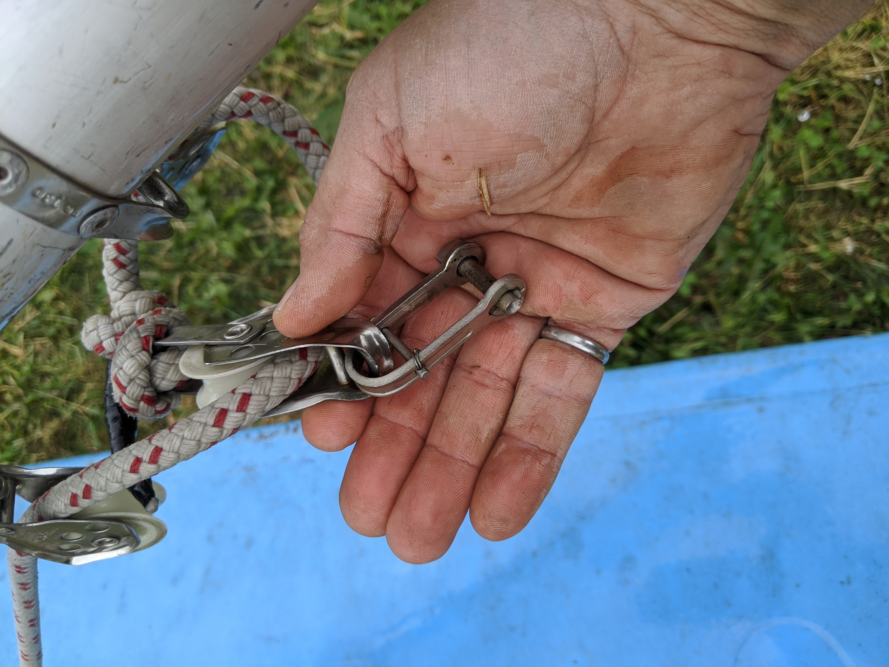
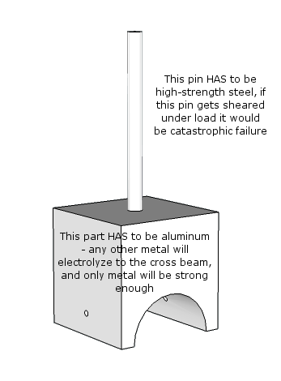
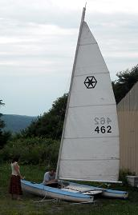

Catamaran Daysailor
Jon and I inherited one from his childhood.
Cal Cat
- Specs:
- LOA:
- LWL:
- Beam:
- Sail area:
Similar designs (for parts):
Hobie Inspiration
Aqua Cat 14
Paper tiger
Repair Work
- Hulls
- Powerwash
- Spot epoxy repair, fiberglass repair under aft starboard support junction
- Redo gelcoat
- Stablize / Replace foam? There is a bunch of loose stuff in there
- Replace drain plugs, for good measure
Trampoline
Clean
Replace 3/8" line in seam?
Standing rigging
Need four 316SS clevis pins for forward turnbuckles
Replace all stays with 1/8" UHMWPE (40 ft)
Need 1/8" UHMWPE, 20 ft, to lash trampoline to rear cross member
Sail dry lube for tracks
Running Rigging
Replace halyard (1/8" UHMWPE, 40 ft )
New steering assembly
Avoids expensive pintles, and more secure
Simpler and better steering than kick-up rudders
Tillers: aluminum tube
Rudder
- 3mm sheet aluminum for box
- Fabricate blade from wood
- Pittsford Lumber has sheets of Marine Okaume-Joubert plywood in 6mm
- Epoxy and then gelcoat
Sail: Tear near foot
Misc Hardware
Need 4 clevis pins to attach cross members to hulls: 1/4"-2 1/2" 316SS
Pins for center boards are missing: fabricate from SS bolts with acrylic tubing
Mast
Mast step missing: fabricate from 316SS plate and a high-strength pin
Float missing (but forums say do without)
Spray-foam ends to seal
Figure 3: Transom.

Figure 4: Mainsheet hardware.

Figure 5: Replacement Mast step.

Figure 6: Where the mast step goes.

Pictures
Figure 7: The Cal Cat in all its glory.

Figure 8: The Cal Cat in all its glory.